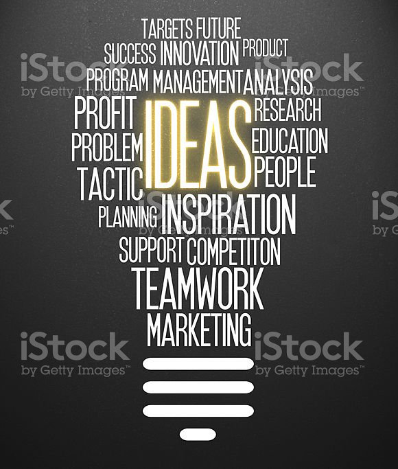

"An idea that is not dangerous is unworthy of being called an idea at all.” – Oscar Wilde
For entrepreneurs, ideas that are deemed impossible by the masses are oftentimes the only ones worth pursuing. Yet how does one stumble upon those rare gems that lead to prosperity and recognition? True, many major companies were the result of serendipity on the part of the original founders, individuals lucky enough to just “come up” with a solution to a pervasive problem.
However, finding a potentially lasting and lucrative startup idea does not need to be left to chance. In fact, there are a multitude of ways that fledgling founders can discover and develop their startup ideas, and we’ve collected just a few of them here for your benefit. Hopefully, hearing from industry experts will give you the inspiration you need to mine your own gems.
Define Your Focus:-
"You can't depend on your eyes when your imagination is out of focus." - Mark Twain
Paul Graham, programmer, venture capitalist, and co-founder of the noted seed accelerator Y Combinator, explores the creative process of generating startup ideas in a comprehensive essay on the subject, "How to Get Startup Ideas".
In his essay, Paul asserts that simply thinking of potential startup ideas is an inefficient means of generating startup ideas. Aspiring entrepreneurs should instead direct their efforts towards focusing on very specific targets during the ideation phase.
"The very best startup ideas tend to have three things in common: they're something the founders themselves want, that they themselves can build, and that few others realize are worth doing."
Focus on Existing Problems
While focusing on existing problems seems like an obvious strategy, too many “wantrepreneurs” attempt to solve problems that no one actually has, and end up wasting time on creating non-existing solutions to non-existing problems.
Focus on the Depth of the Well
Paul posits that a startup can either deliver something that a large number of people want in a small amount, or deliver something that a small number of people want in a large amount. Opt for the latter, as a startup should strive to dig a well that’s narrow and deep rather than a well that’s broad and shallow. Basically, a startup’s initial offering should cater to the small group of users who not only want to use the startup’s offering, but who urgently need it. You can worry about expansion later.
Focus on Yourself
When in the process of contemplating startup ideas, what you should really be doing is not “thinking up” but “noticing”. This may come as a shock to many (not that formal brainstorming and research methods aren’t effective - we’ll get to those later), but countless ideas for lucrative companies grew out of someone noticing what’s missing in the world around them.
And how do you learn to notice the potential ideas that are all around you? Become an expert in the industry you are most interested in. Try it - it might be easier than you think.
Keep it Simple
Adeo Ressi, the founder and CEO of the Founder Institute, has developed his own school of thought when it comes to formulating winning startup ideas. As you'll see throughout this section, the resounding refrain is that entrepreneurs should concenctrate on keeping the ideation process as simple as possible.
According to Adeo, the following are what you need if you want to build a startup:
Passion - If you are going to pursue a potential startup idea, you need to have an unconditional passion for it, as it is something you are going to deal with everyday for possibly many years.
Reality - If reality does not support your idea or your business being built in it, it’s not worth it. Your idea needs to exist within a clearly definable realm (i.e. market, industry, domain, etc.)
Idea - You need to have a coherent and compelling idea that is actionable and feasible.
Business - Regardless of how much passion you have for your idea or how well it fits within a certain market or how compelling it is, your idea needs to be able to make money to sustain itself.
Once you have an understanding of these fundamentals, Adeo has provided a list of concepts to keep in mind while you are brainstorming for potential startup ideas.
As stated above, start with something you are passionate about. Not only will you enjoy the process more, but having experience and interest in your ideas will give you a competitive edge when you begin bringing your them into existence.
Refer to your ideas as “projects”, as it makes them easier to kill. If each idea is treated as if it was something that was only temporary, it will be more painless to ditch it if does not hold up under scrutiny.
Once you’ve conceived several ideas (at least three, if not more), look over what you have and spend some quiet time thoroughly reflecting on each. You may find that you naturally gravitate towards one idea over the others - take note, as this may be the one you continue with.
Assemble a board of friends, family members, and colleagues who will give you honest feedback on your idea. However, since you are acquainted with these people, they are biased and may not give you the harsh truth. Encourage them to hold nothing back.
If this is your first time creating and developing startup ideas, there is a very good chance that the idea you settle on is too niche, too narrow to appeal to a large audience. While it is imperative to have a clear and specific target user base, be sure that your future company has the potential to expand and attract a large number of users.
If you take nothing else from Adeo’s ideation methodology, take note of his seven rules for startup ideas.

1. Simple ideas win and complex ones die. Your idea should consist of one company, one product, and nothing else.
2. Your idea should have one and only one revenue stream. If your idea employs a payment system, complicating it will only drive away your users.
3. Clearly identify your ideal customer. Embody your hypothetical customer with quantifiable traits to better market and sell to them. You may get it wrong the first time and have to change who your customer is later, but you need to start with an archetype.
4. Build something that you can explain in 10 words or less. If someone needs to be an industry expert to understand your idea, it is not worth pursuing.
5. Small markets suck. Remember, any market that is worth $1 billion or less is probably not worth diving into.
6. Mix in secret sauce. You need to be an expert in your respective industry, as your experience and expertise will give you valuable insights into the problem you aim to solve.
7. Be original. If you can’t build a business around a completely unique idea, build a business that’s similar to something that’s been done, find flaws in its model, and devise a way to do it better.
~Aditya Mohite